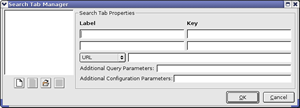
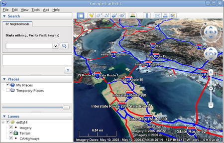

Search tabs allow Google Earth EC and Google Maps users to search external databases on Google Earth Enterprise Servers as well as non-Google servers. For example, if you have a database of San Francisco neighborhoods that contains specific information that your users need about each neighborhood, you can add a search tab called SF Neighborhoods and configure it to search for neighborhoods in your database, even if that database is stored on another server. Google distributes some sample databases with the Google Earth Enterprise Server.
The first thing you need to do is pre-configure search tabs using the Search Tab Manager. Then you can associate the search tabs with a particular database. The exercises in this lesson show you how to perform both steps.

The search tab name appears on the list on the left and is selected.
<b>Starts with</b> (e.g., <b>Pac</b> for Pacific Heights)
Note: You can use some basic HTML to format the Label text, if desired. Google Earth EC accepts only basic font styling HTML codes, such as font size, color, bold, italic, and superscript. It does not accept line breaks.
After you build and publish the database, the text value in the first Label field appears above the first search field in Google Earth EC.
When a Google Earth EC user specifies a search value, the Key value is associated with the value specified by the user and added to the URL GET request submitted to the preconfigured plug-in. It does not necessarily correlate to a field in the search database.
You can enter Label and Key values for one or two fields on each search tab. In this exercise, you use the first Label and Key fields only.
This is the plug-in example supplied with Google Earth Enterprise Fusion. For more information about plug-ins for search tabs and the other fields in this dialog, see the Managing Search Tabs section in the Setting Up Your Workspace chapter of the Reference Guide.
The Asset Manager appears.
ASSET_ROOT/Databases in the asset navigation tree, and double-click the SFHighways database that you built in Lesson 4.
The Database Editor appears with the imagery, terrain, and vector projects specified.
The Database Editor extends to include a Search Tabs definition area.
A pop-up list displays the search tab you created in the previous exercise.
The selected tab appears in the Search Tabs area.
Google Earth Enterprise Fusion saves the changes to the database with the same name.
Even though you built the database before, you must build it again to include the new search tabs. See Adding Search Tabs to a Database, in the Defining and Building Databases chapter of the Reference Guide.
Caution: If you have logged in to this server with Google Earth EC previously, log out, clear your cache, and log back in. For help with clearing your cache, refer to the Google Earth User Guide.
Google Earth EC displays your database with the search tabs you specified.
